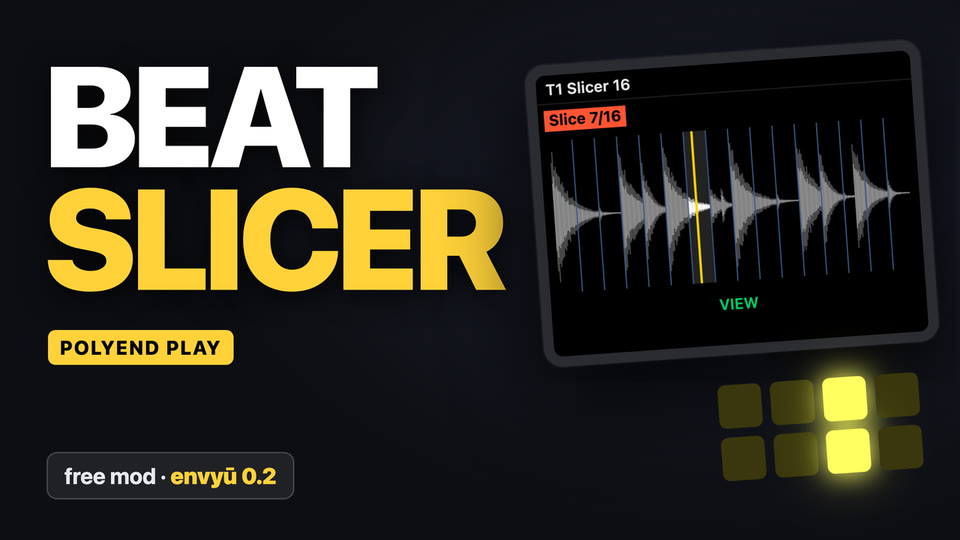

Tap tempo
Open the menu and touch the tempo knob in rhythm. From the sixth tap the tempo is set, and it stays steady. A pill shows the taps and the tempo.
Unofficial mod · Polyend Play · Firmware 1.6.0 · Version 0.2 beta
New in 0.2: a beat slicer. Cut any sample into slices, play them on the pads, sample straight from your computer, tap the tempo. Plus USB audio, moving MIDI effects, an arpeggiator and smarter randomizing. Try each one below, then patch your own firmware right in this page.
Update 0.2.1 Nov 18 · USB audio fix for Windows, Stereo is now the default. Troubleshooting · Changelog

Watch the 3-minute video opens YouTubeAt your own risk. Modified firmware can leave your device unusable and may affect your warranty. Not affiliated with or endorsed by Polyend. Supports Rev A devices; testing is on one device so far.
Under Engines in the main menu, set a sample track to Slicer. Press View: the yellow pads play the slices, the steps choose them. Try it with a drum loop made right in your browser, and press Hear it for a groove built from the slices.
engines.cfg.This schematic works: hold a pad, turn a lit knob or press a lit button. Proportions follow the 282 × 207 mm drawing in the manual.
A new USB Audio page in the main menu turns the Play into an audio interface. The device reconnects to the computer when you change Audio Out.
/usbaudio.cfg on the card.Set Audio Out to Stereo + In, play audio from your computer, then hold Live Rec for about one second. On a slicer track, the recording lands on the track and is cut right away. Try the button:
Press briefly, or press and hold.
Samples/Live Recordings/Rec_NNN.wav and appear as a sample in your project.! in the status means samples were lost, usually a slow SD card.In Perform mode, press Shift + Audio/MIDI to reach the MIDI page, then hold a pad. Three effect groups now move your MIDI instead of sending one fixed value, on the tracks you select. Pad names change on the display; pad colours stay the same.
On a MIDI track, the knob that shows Chord gets a new secondary parameter, Arp. Double-tap the knob to reach it. The arp plays the step's chord in time until the track's next note, Stop, or at most 4 bars.
New in 0.2: Swap Steps, Scatter Steps, Thin Out, Melodic Walk, Accent, Call & Response, Shuffle, Humanize, Octave Jump and Note Length, for MIDI and sample tracks. Before you commit, the pads show which steps will change. Below: Note In Scale, two types for MIDI tracks. Double-tap the Randomize knob to reach Randomize Type. The name follows your project scale, for example In C Dorian. New notes stay within one octave of the original and never repeat it.
If the project scale is Chromatic, Major on the root note is used. The demo shows a selection of the firmware's scales.
Smaller things that add up.
Open the menu and touch the tempo knob in rhythm. From the sixth tap the tempo is set, and it stays steady. A pill shows the taps and the tempo.
Start, end, attack and decay are drawn over the sample while you turn the knobs, also while browsing samples.
The track selection survives switching between Perform and the pattern (menu Keep Selection), and the mute pads flash on every hit in the color of the track's engine.
Pad colors for red-green and blue-yellow color blindness, in envyu Settings.
Uses the built-in Windows driver. If the Play doesn't show up as an audio device, see Troubleshooting and tell us on GitHub.
The mod checks itself at every start. If its code is ever damaged, the Play starts as stock and you can simply install again.
Menu: Engines and USB Audio sit in the main menu; envyu Settings holds Color Mode, Keep Selection and About.
This page contains no Polyend firmware. You bring the official file; your browser adds the mod. Nothing leaves your computer.
Firmware folder. Keep few files there: a device with 31 of them stopped at “Preparing”.Switch the Play on and connect it by USB. Works in Chrome, Edge or Opera on a computer. Nothing is installed until you press Install now.
Put only the original .ppf in /Firmware and install it from the update menu.
Safety net: if the mod's code is damaged, for example by an interrupted update, the Play starts as stock. Install the mod or the original again from the update menu.
If the device hangs: switch it off, take the card to a computer and leave a single working .ppf in /Firmware. Put the card back, switch on and briefly press the hidden reset button. In this emergency mode the device picks a file at random, so one file matters.
The same USB connection also works from a terminal: transfer files and start updates without moving the card. It needs Python with pyserial:
python3 tools/play_upload.py ls /Firmware
python3 tools/play_upload.py put Kick.wav /Samples/Kick.wav
python3 tools/play_upload.py update New.ppfWhile the mod runs, programs on the connected computer can use these commands, including flashing and deleting files.
| Device | Status |
|---|---|
| Play, Rev A (Kinetis K66), firmware 1.6.0 | Target device, tested on one device, testing in progress |
| Play, Rev B (i.MX RT) | Rev B part of the file stays stock, untested |
| Play+ | Not supported |
Known problems and what to try. Still stuck? Open an issue on GitHub.
We can't test on Windows ourselves, so these steps come from user reports and the USB specs. Your feedback helps.
VID_16D0&PID_0EA0.Audio Out is set to Stereo+Multi (Win) (from 0.2.1), which splits stereo and multitrack on purpose. Choose Stereo + Multi to get one device with all channels.
Keep only a few files in the card's Firmware folder. A device with 31 files there stopped at “Preparing”. See Patch and install for going back and the emergency mode.